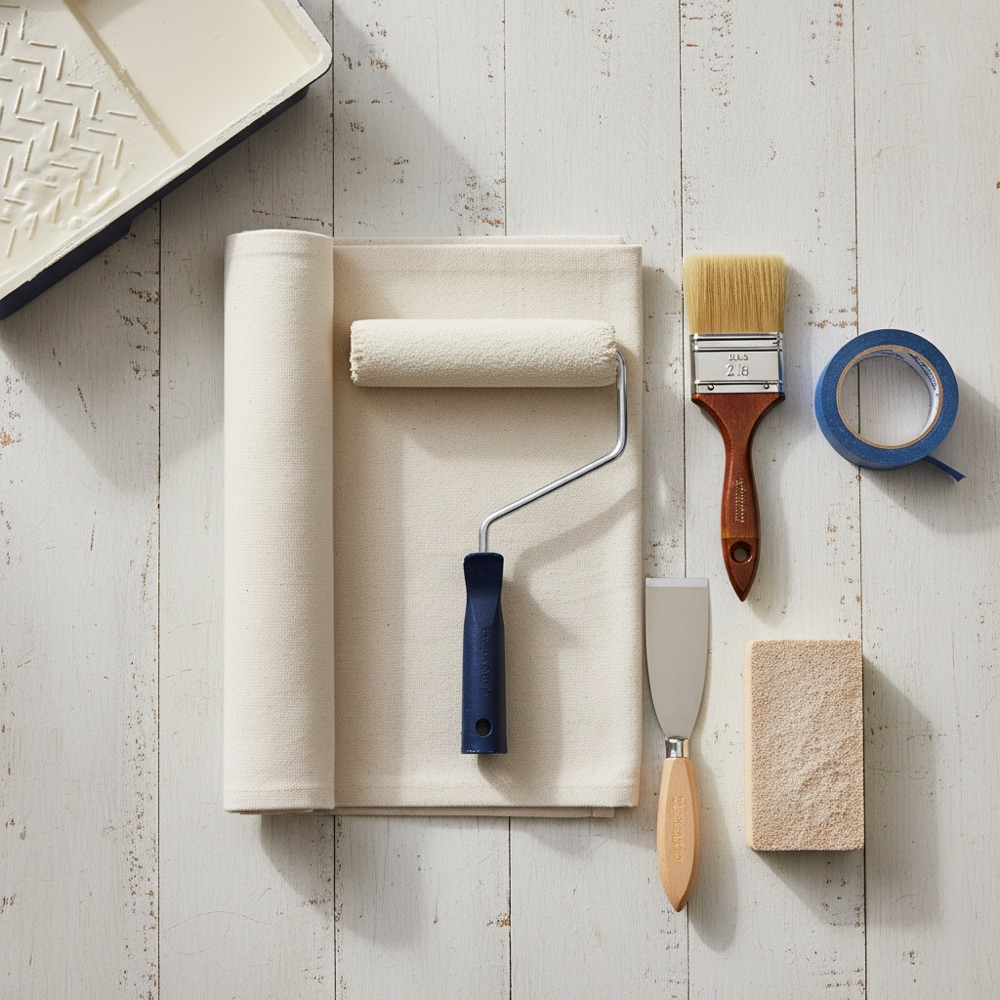

12 Essential DIY Painting Tools for a Pro Finish
Skip the gimmicks. These are the painting tools that genuinely make a DIY paint job faster, cleaner, and more professional — with tips on choosing each.

A great paint job is 90% preparation and the right tools — not expensive paint or special talent. Buy a handful of quality basics and your walls will look like a pro did them. Here are the twelve tools worth owning, why each matters, and how to choose. Once you know your quantities from the paint calculator, this is your shopping list.
The core kit
1. A quality roller frame and covers
The roller does most of the work on walls and ceilings. A sturdy 9-inch frame with a comfortable grip plus the right nap (cover thickness) for your surface makes the difference between an even coat and a streaky one. Use 3/8-inch nap for smooth walls, 1/2-inch for light texture, and 3/4-inch for heavy texture.
2. An angled sash brush
A 2 to 2.5-inch angled brush is what you cut in with — painting the clean line where the wall meets the ceiling, trim, and corners. A good brush holds more paint and releases it evenly. This is the one place not to buy the cheapest option.
3. An extension pole
Threads onto your roller frame so you can reach ceilings and the tops of walls without a ladder, and paint with your whole arm instead of your wrist. It is faster and far less tiring. A telescoping pole that extends to a few feet covers most rooms.
4. Paint tray or a bucket and grid
For one room, a sturdy tray with disposable liners works fine. For bigger jobs, pros load from a 5-gallon bucket with a roller grid — it holds more paint and is harder to tip over. Either way, liners make cleanup trivial.
Prep and protection
5. Painter's tape
The secret to crisp lines. Press it down firmly along the edge for a clean seal, and remove it before the paint fully cures. Better tapes resist bleed-through and come off without lifting your finish.
6. Drop cloths
Canvas drop cloths lie flat, absorb drips, and last for years — far better than slippery plastic sheeting on floors. Use them on the floor and over furniture you cannot move out.
7. Putty knife and spackle
Fill nail holes, dents, and small cracks before you paint. A flexible putty knife and a tub of lightweight spackle take ten minutes and make the finished wall look seamless.
8. Sanding block or sandpaper
Lightly sand patched spots and glossy surfaces so the new paint bonds. A medium-grit sanding sponge is easy to control and reaches corners.
The finishing touches
9. A paint can opener and stir sticks
Tiny tools, big convenience. A proper opener saves your screwdriver and your fingers, and stirring thoroughly before and during the job keeps color and sheen consistent.
10. Tack cloth or microfiber
Wipe down sanded and dusty surfaces before painting. Paint will not adhere well to a dusty wall, and trapped grit shows in the finish.
11. A sturdy step stool or ladder
Even with an extension pole, you need safe height for cutting in at the ceiling. A stable step stool beats balancing on furniture every time.
12. Cleanup supplies
Have rags, a bucket of warm soapy water (for latex paint), and a brush comb on hand. Cleaning quality brushes and rollers properly means they last for many projects.
What you can skip
Gadgets like edging tools and paint pads promise speedier cutting-in but rarely beat a good brush in practiced hands. Save your money for better brushes, rollers, and tape — the tools you will actually feel the difference from.
With your kit ready, lock in your quantities using the paint calculator, and if you are not sure how much to buy, read how much paint do I need.
CalcReno may include affiliate links to products we mention. If you buy through them, we may earn a small commission at no extra cost to you. We only suggest categories of tools that are genuinely useful for the job.